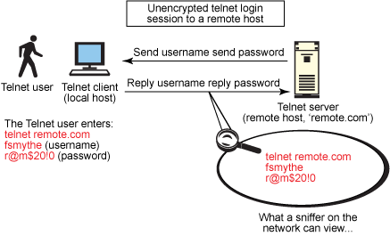
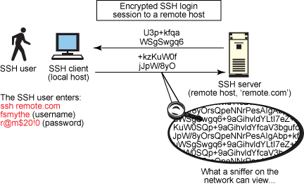
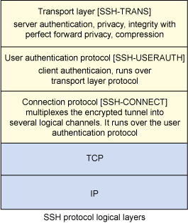
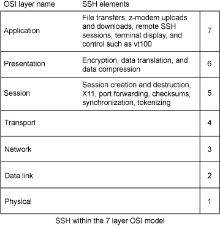
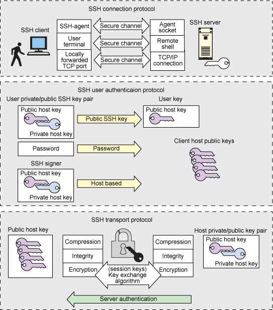

在 IBM Bluemix 云平台上开发并部署您的下一个应用。
什么是 SSH？基本描述
Secure Shell (SSH) 的目的在于在通过网络远程访问另一个主机时提供最大的保护。它通过提供更好的身份验证工具和 Secure Copy (SCP)、Secure File Transfer Protocol (SFTP)、X 会话转发和端口转发等功能来加密网络交换，从而增加其他非安全协议的安全性。有各种类型的加密可用，从 512 位加密到高达 32768 位加密，包括密码，比如 Blowfish、Triple DES、CAST-128、Advanced Encryption Scheme (AES) 和 ARCFOUR。更高位的加密配置以使用更高的网络带宽为代价。图 1 和 图 2 展示如何使用一个像 Wireshark 这样的网络嗅探程序轻松让任何人随意查看 telnet 会话。
图 1. Telnet 协议会话未加密。
在使用 telnet 这样的不安全 “明文” 协议时，网络上的任何人都可以窃取您的密码和其他敏感信息。图 1 展示用户 fsmythe 通过一个 telnet 连接登录到一个远程主机。他输入其用户名 fsmythe 和密码 r@m$20!0，同一网络上的任何其他用户都可以看到，将其看作是倒霉、没有戒心的 telnet 用户。
图 2. SSH 协议会话加密。
图 2 提供了对典型 SSH 会话的概览，并展示了加密的协议如何不被同一网段的任何其他用户看到。现在每个主流 Linux® 和 UNIX® 版本都附带有默认安装的 SSH 包 — 通常是开源 OpenSSH 包—，因此有点需要下载和从源码进行编译。如果您不在一个 Linux 或 UNIX 平台上，有大量开源和基于 SSH 的免费软件工具可用，它们大受追捧并广为应用，比如 WinSCP、Putty、FileZilla、TTSSH 和 Cygwin（安装在 Windows® 操作系统之上的 POSIX 软件）。这些工具在 Windows 平台上提供一个 UNIX 或 Linux 式的 shell 接口。
不管您的操作系统是什么，SSH 都为老生常谈的日常计算操作提供许多实际效益。它不仅可靠、安全和灵活，而且易于安装、使用和配置 — 而且独具特色。
SSH 架构
IETF RFC 4251 到 4256 将 SSH 定义为 “经由一个不安全网络进行远程登录和其他安全网络服务的安全 shell 协议”。shell 由三个主要元素组成（参见 图 3）：
- 传输层协议：该协议提供服务器身份验证、隐私和具有完美转发隐私的完整性。该层可以提供可选压缩且通过一个 TCP/IP 连接运行，但是也可用于任何其他可靠的数据流之上。
- 用户认证协议：该协议从服务器到客户端进行身份验证，且通过传输层运行。
- 连接协议：该协议多路传输加密隧道到多个逻辑通道，通过用户认证协议运行。
图 3. SSH 协议逻辑层
传输层负责密钥交换和服务器身份验证。它设置加密、完整性验证和（可选）压缩并向上层公开一个用于发送和接收纯文本数据包的 API。用户认证层提供客户端身份验证以及多种验证方法。常见的身份验证方法包括密码、公钥、键盘交互、GSSAPI、SecureID 和 PAM。
连接层定义通道、全局请求和借以提供 SSH 服务的通道请求。单个 SSH 连接可以并行承载多个通道，每个都可双方向传输数据。通道请求转送信息，比如服务器端流程的退出代码。SSH 客户端发起一个转发服务器端端口的请求。
这种开发式架构设计提供广泛的灵活性。传输层可媲美传输层安全（Transport Layer Security，TLS），而且您可以运用定制的身份验证方法来扩展用户认证层。通过连接层，您可以多道传输二级会话到单个 SSH 连接（参见 图 4）。
图 4. 7 层 OSI 模型内的 SSH
针对 UNIX 和 Linux 系统的 SSH 的一般用途
您通常使用 SSH 来允许用户登录到一个远程主机并执行命令。然而，SSH 还支持隧道和 X11 连接。它甚至可以使用 SFTP 或 SCP 传输文件。SSH 适用于大部分常见平台内的多个应用程序，这些平台包括 Linux、UNIX、Windows 和 Apple® OS X，虽然有些应用程序可能需要仅在特定 SSH 客户端或服务器上提供或与之兼容的功能。
下面是一些常见的 SSH 语法例子：
- 远程主机 shell 访问（取代 telnet 和 rlogin 明文，不安全协议）：
# ssh fsmythe@example.com [fsmythe@example.com] ~
- 在远程主机（代替 rsh）执行单一命令：
# ssh root@example.com reboot root@example.com's password: ******
- 通过
SCP命令将文件从本地服务器复制到远程主机。root@edb-01.example.com's password: ****** file1.txt 100% 0 0.0KB/s 00:00 file2.txt 100% 0 0.0KB/s 00:00
- 结合 SFTP，作为 FTP 文件传输的一个安全替代品：
sftp fsmythe@example.com Connecting to example.com... fsmythe@example.com's password: ******* sftp>
- 结合 rsync 有效安全地备份、复制和镜像文件到一个本地或远程主机：
# rsync -avul --rsh=ssh /opt/edbdata/ root@example.com:/root/backup/ root@example.com's password: ****** building file list ... done ./ file1.txt file2.txt file3.txt file4.txt dir1/file5.txt dir2/file6.txt sent 982813 bytes received 2116 bytes 1374860.38 bytes/sec total size is 982138 speedup is 1.00
- 端口转发或端口隧道化（不要与 VPN 混淆）：
ssh -L 8000:mailserver:110 example.com fsmythe@example.com's password: ********
- 从一个远程主机转发 X 会话（可能通过多个中间主机）：
Edit /etc/ssh/sshd_config and change 2 keywords : AllowTcpForwarding yes X11Forwarding yes # service sshd restart $ export DISPLAY $ ssh -X fsmythe@example.com
- X11 转发配置与带 SSH X11 隧道的一个 X Windows 客户端的结合，支持实现通过 SSH 安全地在同一 Windows 主机上运行的一个 UNIX 或 Linux GUI 子系统，该 Windows 主机是到 Linux 或 UNIX 远程主机的 SSH 会话的来源：
ssh -ND 8000 fsmythe@example.com Browser Settings, goto 'Manual Proxy Configuration' set "SOCKS Host" to example.com, the 'Port to 8000' , Enable SOCKS v5, and lastly set 'No Proxy for' field to 'localhost, 127.0.0.1'
- 使用
sshfs将一个目录作为本地计算机上的文件系统安全地挂载到一个远程服务器：# yum install sshfs fuse-utils (Install sshfs and fuse-utils) $sshfs example.com:/remote_dir /mnt/local_dir
- 通过一个或多个机制对服务器进行自动化的远程主机监控和管理：
(Report number of apache processes running on the remote server example.com): $ ssh example.com ps -ef | grep httpd | wc -l root@example.com's password: *****
SSH 安全性和配置最佳实践
对于一些之前列举的代码示例，许多系统管理员担心 SSH 使用情况和功能的一些安全性实现。尽管已经口头和书面说明了常见的各种 SSH 安全性和远程主机安全性方法，下面有一系列流程和配置可用于加强有关远程主机访问的 SSH 安全性：
- 将 root 账户仅限制为控制台访问：
# vi /etc/ssh/sshd_config PermitRootLogin no
- 为私有密钥使用一个强大的口令和密码保护来创建公私密钥对（绝不要生成一个无密码的密钥对或一个无密码口令无密钥的登录）：
(Use a higher bit rate for the encryption for more security) ssh-keygen -t rsa -b 4096
- 配置 TCP 包装程序，以便仅允许选定的远程主机并拒绝不合意的主机：
# vi /etc/hosts.deny ALL: 192.168.200.09 # IP Address of badguy
- 在工作站或笔记本电脑上，关闭 SSH 服务禁用 SSH 服务器，然后删除 ssh 服务器包：
# chkconfig sshd off # yum erase openssh-server
- 通过控制用户访问限制 SSH 访问：
# vi /etc/ssh/sshd_config AllowUsers fsmythe bnice swilson DenyUsers jhacker joebadguy jripper
- 仅使用 SSH Protocol 2：
# vi /etc/ssh/sshd_config Protocol 2
- 不要支持闲置会话，并配置 Idle Log Out Timeout 间隔：
# vi /etc/ssh/sshd_config ClientAliveInterval 600 # (Set to 600 seconds = 10 minutes) ClientAliveCountMax 0
- 禁用基于主机的身份验证：
# vi /etc/ssh/sshd_config HostbasedAuthentication no
- 禁用用户的 .rhosts 文件：
# vi /etc/ssh/sshd_config IgnoreRhosts yes
- 配置防火墙以接受仅来自已知网段的 SSH 连接：
Update /etc/sysconfig/iptables (Redhat specific file) to accept connection only from 192.168.100.0/24 and 209.64.100.5/27, enter: -A RH-FW-1-INPUT -s 192.168.100.0/24 -m state --state NEW -p tcp --dport 22 -j ACCEPT -A RH-FW-1-INPUT -s 209.64.100.5/27 -m state --state NEW -p tcp --dport 22 -j ACCEPT
- 限制 SSH 将侦听和绑定到的可用接口：
# vi /etc/ssh/sshd_config ListenAddress 192.168.100.17 ListenAddress 209.64.100.15
- 设置用户策略，实施强大的密码来防御强力攻击、社会工程企图（social engineering attempts）和字典攻击：
# < /dev/urandom tr -dc A-Za-z0-9_ | head -c8 oP0FNAUt[
- 使用
Chroot SSHD将 SFTP 用户局限于其自己的主目录：# vi /etc/ssh/sshd_config ChrootDirectory /data01/home/%u X11Forwarding no AllowTcpForwarding no
- 禁用空密码：
# vi /etc/ssh/sshd_config PermitEmptyPasswords no
- 在指定时间内对传入端口 2022 连接的数量限速：
Redhat iptables example (Update /etc/sysconfig/iptables): -A INPUT -i eth0 -p tcp --dport 2022 -m state --state NEW -m limit --limit 3/min --limit-burst 3 -j ACCEPT -A INPUT -i eth0 -p tcp --dport 2022 -m state --state ESTABLISHED -j ACCEPT -A OUTPUT -o eth0 -p tcp --sport 2022 -m state --state ESTABLISHED -j ACCEPT
- 配置
iptables，以便在 30 秒内仅允许在端口 2022 上有三个连接尝试：Redhat iptables example (Update /etc/sysconfig/iptables): -I INPUT -p tcp --dport 2022 -i eth0 -m state --state NEW -m recent --set -I INPUT -p tcp --dport 2022 -i eth0 -m state --state NEW -m recent --update --seconds 30 --hitcount 3 -j DR
- 使用一个日志分析器，比如
logcheck、loggrep、splunk或logwatch来更好地理解日志并创建日志报告。另外，在 SSH 应用程序自身内增加日志记录的详细度：Installation of the logwatch package on Redhat Linux # yum install logwatch
- 通过配置增加 SSH 日志记录的详细度：
# vi /etc/ssh/sshd_config LogLevel DEBUG
- 在补丁上总是将 SSH 程序包和需要的库保持为最新：
# yum update openssh-server openssh openssh-clients -y
- 隐藏 OpenSSH 版本，要求 SSH 源代码并进行重新编译。然后进行以下更新：
# vi /etc/ssh/sshd_config VerifyReverseMapping yes # Turn on reverse name checking UsePrivilegeSeparation yes # Turn on privilege separation StrictModes yes # Prevent the use of insecure home directory # and key file permissions AllowTcpForwarding no # Turn off , if at all possible X11Forwarding no # Turn off , if at all possible PasswordAuthentication no # Specifies whether password authentication is # allowed. The default is yes. Users must have # another authentication method available .
- 从系统上删除 rlogin 和 rsh 二进制程序，并将它们替代为 SSH 的一个
symlink：# find /usr -name rsh /usr/bin/rsh # rm -f /usr/bin/rsh # ln -s /usr/bin/ssh /usr/bin/rsh
SSH 支持可启用或禁用的多种不同的身份验证方法和技术。在 /etc/ssh/sshd_config 文件中，您可以进行这些配置更改，方法就是输入为身份验证方法列出的关键字，然后紧接 yes 或 no。下面是一些常见的配置更改：
# RSAAuthentication yes # PubkeyAuthentication yes # RhostsRSAAuthentication no # HostbasedAuthentication no # RhostsRSAAuthentication and HostbasedAuthentication PasswordAuthentication yes ChallengeResponseAuthentication no # KerberosAuthentication no GSSAPIAuthentication yes
sshd_config 文件内的 AllowedAuthentications 和
RequiredAuthentications 决定哪些身份验证方法和配置仅用于 SSH Protocol 2，且它们支持密码和公钥身份验证的语法如下：
# vi /etc/ssh/sshd_config AllowedAuthentications publickey, password RequiredAuthentications publickey, password
SSH 的私钥和公钥对
为了帮助验证身份，SSH 有一个密钥管理功能和相关的代理。当配置为公钥身份验证时，您的密钥证明您在远程 SSH 主机上的身份。一个基于 SSH 的身份包括两个部分：一个公钥和一个私钥。私有 SSH 密钥是用于出站 SSH 连接的用户身份，且应当保密。当用户发起一个 SSH 或 SCP 会话到远程主机或服务器时，他或她被认为是 SSH 客户端。通过一个数学算法，一个私钥如同您的电子身份证；公钥如同您向其出示身份证的锁或门机制。您的私钥说，“这真的是 Fred Smythe”；公钥说，“是的，您确实是真正的 Fred Smythe；您已通过身份验证：请进入。”
您的公钥代表您允许通过您的大门或锁进入的人。公钥需要保密；它们不能用于泄漏一个系统或对系统进行未经授权的访问。在一个 Linux 或 UNIX 系统上，这些私有和公共密钥对存储在 ASCII 文本系统中；在 Windows 系统上，一些程序将密钥对存储为文本文件，一些存储在 Windows 注册表中。
通过一个 SSH Protocol 2 配置可创建使用多个私有密钥的多重鉴定。让我们看看如何在一个典型的 Linux 主机上生成、设置和配置一个 SSH 私有和公共密钥对（参见 图 5）。
图 5. 在 SSH 定义的架构模型中定义的 SSH 公私密钥对事务图
配置公私 SSH 密钥对的步骤
步骤 1 中所示的示例（参见 清单 1）为用户 fsmythe 使用 ssh-keygen 使用程序，通过 dsa 的 type 创建 SSH 公私密钥对。
清单 1. 生成 SSH 密钥对
[fsmythe@example.com ~]$ /usr/bin/ssh-keygen -t dsa Generating public/private dsa key pair. Enter file in which to save the key (/home/fsmythe/.ssh/id_dsa): Enter passphrase (empty for no passphrase): ****** (Enter 'mypassword') Enter same passphrase again: ****** (Enter 'mypassword') Your identification has been saved in /home/fsmythe/.ssh/id_dsa. Your public key has been saved in /home/fsmythe/.ssh/id_dsa.pub. The key fingerprint is: 33:af:35:cd:58:9c:11:91:0f:4a:0c:3a:d8:1f:0e:e6 fsmythe@example.com [fsmythe@example.com ~]$
步骤 2 中所示的示例（清单 2） 展示如何将密钥对的公共密钥从源主机复制到目标主机的 authorized_keys 文件，该文件位于目标主机上预期用户帐户的主目录下的 .ssh 子目录内。
清单 2. 将公共密钥从源主机复制到目标主机上的 authorized_keys 文件
[fsmythe@example.com ~]$ scp -p /home/fsmythe/.ssh/id_dsa.pub fsmythe@thor01.com:/home/fsmythe/.ssh/authorized_keys fsmythe@ thor01.com's password: id_dsa.pub 100% 624 0.6KB/s 00:00
步骤 3 中所示的示例（参见 清单 3）发出第一次远程 SSH 调用（ls -d /tmp）到目标服务器，从而缓存您的服务器的 .ssh/known_hosts 文件内的密钥。您可以输入与在创建 SSH 公私密钥对时同样的口令，且在远程目标服务器上运行的命令的输出可在您本地的源服务器上看到。
清单 3. 通过在目标远程主机上运行远程命令来验证 SSH 访问
[fsmythe@example.com ~]$ ssh root@thor01.com ls -d /tmp The authenticity of host 'thor01.com (10.12.53.118)' can't be established. RSA key fingerprint is 84:4f:e5:99:0b:7d:54:d0:1b:3e:2b:96:02:34:41:25. Are you sure you want to continue connecting (yes/no)? yes Warning: Permanently added 'thor01.com,10.12.53.118' (RSA) to the list of known hosts. Enter passphrase for key '/root/.ssh/id_dsa': ****** (Enter 'mypassword') /tmp file1.txt file2.txt dir3_5432
注意：对于上述示例，您不必输入用户 fsmythe 的密码。不过您可以输入您在第一步中设置的口令。如果您选择在访问远程目标时不输入口令，那么在提示输入口令时输入步骤 1 中的 enter 来创建一个空口令。现在，您不必输入任何内容来作为用户 fsmythe 访问 thor01.com 远程目标机器。
配置和使用 ssh-agent
对于拒绝创建无密码 SSH 公私密钥对的真正的偏执狂来说，有一个 ssh-agent 实用程序。简言之，您使用 ssh-agent 实用程序来暂时在无口令集的公私密钥对配置上授予无密码的 SSH 访问，但仅针对当前 shell 会话。在运用 ssh-agent 实用程序之前，像往常一样输入口令：
[root@example01.com ~]# ssh root@example02.com Enter passphrase for key '/root/.ssh/id_dsa':****** (User must type password) Last login: Sat May 8 06:37:26 2010 from 10.12.53.118
接下来，查询 ssh-agent 以在标准输出中生成 Bourne shell
命令：
[root@example01.com ~]# ssh-agent -s SSH_AUTH_SOCK=/tmp/ssh-vxZIxF1845/agent.1845; export SSH_AUTH_SOCK; SSH_AGENT_PID=1849; export SSH_AGENT_PID; echo Agent pid 1849;
在步骤 3 中，在当前 shell 会话中设置前述的环境变量：
[root@example01 ~]# SSH_AUTH_SOCK=/tmp/ssh-vxZIxF1845/agent.1845;export SSH_AUTH_SOCK SSH_AGENT_PID=1849; export SSH_AGENT_PID;echo Agent pid 1849 Agent pid 1849
然后，确认 ssh-agent 在运行：
[root@example01.com ~]# ps -fp $SSH_AGENT_PID UID PID PPID C STIME TTY TIME CMD root 1849 1 0 06:14 ? 00:00:00 ssh-agent -s
现在，在运行的 ssh-agent 内列出当前加载的身份：
[root@example01.com ~]# ssh-add -l The agent has no identities.
在步骤 6 中，添加所需的 SSH 身份（使用该 SSH 密钥的正确口令对其进行预先验证）：
[root@example01.com ~]# ssh-add Enter passphrase for /root/.ssh/id_dsa: Identity added: /root/.ssh/id_dsa (/root/.ssh/id_dsa) ****** (Entered 'mypassword')
现在，您可以确认将这些身份加载到运行的 ssh-agent 中：
[root@example01.com ~]# ssh-add -l 1024 33:af:35:cd:58:9c:11:91:0f:4a:0c:3a:d8:1f:0e:e6 /root/.ssh/id_dsa (DSA)
最后，使用 SSH 命令语法测试 ssh-agent。注意，现在有一个口令提示：
# Assuming target remote host has correct authorized key for private key from example01 [root@example01.com ~]# ssh -A root@example02.com Last login: Sat May 8 06:36:27 2010 from 10.12.53.118 [root@example02 ~]# # Assuming target remote host has correct authorized key for private key from example03 [root@example01.com ~]# ssh -A root@example03.com Last login: Sat May 8 07:04:05 2010 from 10.12.53.119 [root@example03 ~]#
在使用 ssh-add 命令输入口令时，您实际上是在解密私有密钥然后通过代理将其放到内存中，用于将来使用该口令的 SSH 连接。注意，您可以输入多个私有密钥并使用 ssh-add 命令预先验证它们。
清单 4 中所示的 SSH 工具 ssh-keyscan 允许您从多个远程 SSH 主机收集公共 SSH 主机密钥。该工具有助于构建 /etc/ssh_known_hosts 文件且异常快速有效。它主要适用于用于自动化用途的 shell 脚本。
清单 4. 使用 ssh-keyscan 的示例
[root@example01 ~]# /usr/bin/ssh-keyscan -t rsa,dsa example02.com # example02.comSSH-2.0-OpenSSH_4.3 example02.comssh-dss AAAAB3NzaC1kc3MAAACBALd5/TGn7jCL1DWWzYMw96jw3QOZGBXJgP4m9LACViyM0QHs ewHGo841JdInfE825mVe0nB/UT15iylLOsI/jFCac+ljQRlO+h2q7WOwGveOUN7TxyKlejM+G1pg5DndGt05iYn+2 dDfn5CmEsI+K0F2vk/+mpoSOk9HKq9VgwNzAAAAFQDPeLAth62TRUcN/nTYoqENBmW3SwAAAIEAryoKa+VaG5LQNj wBujAuA7hGl+DIWVb1aZ8xAHkcyL5XgrOWEKNnK9mDmEN66oMLfTMO3w8/OvbJUmcXcU3jnL3zguz2E2OIv6t6vAa F6niL7A/VhxGGxy4CJZnceufStrzZ3UKXRzjwlm0Bwu/LruVF2m3XLvR5XVwUgyWvw+AAAACAaK12k3uC/OOokBgi eu/SuD5wCSBsf9rqG9ZFa32ujZwRZmA/AwPrZd6q3ASxmjtMp6zGQSzxPczUvLH9D9WIJo713bw8wCPo/7pqiQNRs OZXqlQyaXyrDout6CI683b1/rxsZKPrJpFNehrZwjWrwpYhK7VaTuzxvWtrDyDxWec= # example03.comSSH-2.0-OpenSSH_4.3 example03.comssh-rsa AAAAB3NzaC1yc2EAAAABIwAAAQEAq5So5VBeH4gPX1A1VEeQkGsb/miiWsWnNTW8ZWYj 2IvU7rKpk/dBIp64WecYYYgDqTK5u0Q+yTijF8wEEI9rRyoh9p5QraM8qy9NxcHzyGqU4vSzfVrblIQrDI8iv7iwz 7PxQAY76NmweaUyGEDfIErty4gCn/ksy85IgffATa9nt36a4iUhiDNifnE8dm1ZrKkvz3lIg0w+Cu0T9MY77AqLWj Moo0WoQArIvYa0soS3VhzgD/Biwu/sh3eHJtFUxTVxnATdkWkHKUI1wxma3j7jF0saTRKEQSvG6492W+U1FhEjFGN r7KeZXH99uFpuUWFA7xO7uaG/MLWSjPJMxw== # example04.comSSH-2.0-OpenSSH_4.3 example04.comssh-dss AAAAB3NzaC1kc3MAAACBALd5/TGn7jCL1DWWzYMw96jw3QOZGBXJgP4m9LACViyM0QHs ewHGo841JdInfE825mVe0nB/UT15iylLOsI/jFCac+ljQRlO+h2q7WOwGveOUN7TxyKlejM+G1pg5DndGt05iYn+2 dDfn5CmEsI+K0F2vk/+mpoSOk9HKq9VgwNzAAAAFQDPeLAth62TRUcN/nTYoqENBmW3SwAAAIEAryoKa+VaG5LQNj wBujAuA7hGl+DIWVb1aZ8xAHkcyL5XgrOWEKNnK9mDmEN66oMLfTMO3w8/OvbJUmcXcU3jnL3zguz2E2OIv6t6vAa F6niL7A/VhxGGxy4CJZnceufStrzZ3UKXRzjwlm0Bwu/LruVF2m3XLvR5XVwUgyWvw+AAAACAaK12k3uC/OOokBgi eu/SuD5wCSBsf9rqG9ZFa32ujZwRZmA/AwPrZd6q3ASxmjtMp6zGQSzxPczUvLH9D9WIJo713bw8wCPo/7pqiQNRs OZXqlQyaXyrDout6CI683b1/rxsZKPrJpFNehrZwjWrwpYhK7VaTuzxvWtrDyDxWec= # example05.comSSH-2.0-OpenSSH_4.3 example05.comssh-rsa AAAAB3NzaC1yc2EAAAABIwAAAQEAq5So5VBeH4gPX1A1VEeQkGsb/miiWsWnNTW8ZWYj 2IvU7rKpk/dBIp64WecYYYgDqTK5u0Q+yTijF8wEEI9rRyoh9p5QraM8qy9NxcHzyGqU4vSzfVrblIQrDI8iv7iwz 7PxQAY76NmweaUyGEDfIErty4gCn/ksy85IgffATa9nt36a4iUhiDNifnE8dm1ZrKkvz3lIg0w+Cu0T9MY77AqLWj Moo0WoQArIvYa0soS3VhzgD/Biwu/sh3eHJtFUxTVxnATdkWkHKUI1wxma3j7jF0saTRKEQSvG6492W+U1FhEjFGN r7KeZXH99uFpuUWFA7xO7uaG/MLWSjPJMxw==
使用 UNIX 应用程序或脚本配置 SSH
配置供远程 shell 脚本使用的 SSH 访问以及用于维护、远程备份和存档系统的远程工具非常有用，但一旦涉及到服务器安全性，它一直都是一个有极大争议的主题。用户可能希望运行的很多 shell 脚本，比如：
$ ssh fsmythe@example.com /usr/local/bin/dangerous_script.pl
不能处理提示其进行身份验证的一个必需的 SSH 口令，但除非提前配置一个无密码的公私 SSH 密钥对、一个 ssh-agent 配置或一个可信的主机网络机制 — 不提示输入 SSH 密钥的配置 —，否则这不太可能。这是因为 SSH 期待来自与该 shell 会话相关的当前终端的口令。通过使用一个预期脚本或 Perl（参见 CPAN Module Net::SSH::Perl）脚本（或您的 shell 脚本可以选择性地调用上述脚本类型中的一种）用户可以解决该问题：
#!/usr/local/bin/expect spawn sftp $argv expect "password:" send "mysshpassowrd\r"
向一般用户授予一个无密码的 SSH 机制来访问远程主机在一些系统管理员的眼里已相当不可想象。然而，拥护无密码 SSH 机制访问远程主机的其他安全措施，比如远程主机上的用户仅提供一个受限的 korn shell (rksh) 帐户或受限的 shell (rssh) 而非一个完全的 bash 或 Bourne shell 帐户。一个授权密钥也可以将用户限制为列表中命令的一个子集，因此实际上，用户仅可以使用运程运行所需的确切命令，没有可能发生进一步访问或会损坏系统的一个意外命令运行。清单 5 中提供的 SSH 限制示例提供这样一个限制类型。
清单 5. 限制远程主机上 authorized_keys 文件的配置示例
[fsmythe@example02 .ssh]$ more authorized_keys command="/usr/local/bin/secureScript.sh",no-port-forwarding,no-X11-forwarding,no-agent-fo rwarding,no-pty ssh-dss AAAAB3NzaC1kc3MAAACBAOFsC6C7cJUGOZG4Ur9W0J6mxTTk5+MYTu5XfRESPLVwQ A7HlUxhsXsxgmb1L1RgvR/g0JZnipDS+fGOrN2/IerSpgyzegTVxYLPrOovvuyCn5TA0+rmyrkV27so6yRDkdqTJc YzWNJOyDndnTrDc/LNmqLFKoGMQ33aur6RNv4VAAAAFQD4leC5Fc1VJqjvXCNsvazBhi84vQAAAIAWbshT80cTESg dX/srxX4KVNAzY1uhBz5V0UYR4FGP+aoe6laxRj+gQvFIvAKIrpikvBjgyW6cdT8+k0t8HGIQp20MzSBdY9sH8xdj 05AG97Nb/L8xzkceB78qfXhV6txaM1CzssUtiOtaAygrywNPBDEN9MbEbwpVVVyd6iqZNgAAAIAmV0SUZoUr8dHdC tagRye4bGOQjoztpb4C0RbXQw+w7Jpzr6cZISdZsK4DTBjODvv2+/OWPm7NEzzWyLzHPBNul8hAHOUCOpp+mYWbXX F78BTk2Ess0SZu8dwpOtasTNEp+xPcsOvQx2Kdr17gTp+28SfpREuLudOr6R3KeTb+hw== fsmythe@example01
主机 example01 上的用户 fsmythe 仅允许执行本例中的命令 ="/usr/local/bin/secureScript.sh。
使用 SSH 创建一个可信的主机环境
最后，我要提一下作为一种替代方案来设置公私 SSH 密钥对的可信主机环境。对于自动化或在有必要进行这些类型的调用的一个脚本环境中，虽然可信主机环境仍然承担一些安全风险，但它优于公私密钥对场景。一个可信主机环境或可信主机身份验证主要依赖于列出获准访问的用户和主机组合的预配置文件。有两种可信主机身份验证。较老（比如针对 OpenSSH 和 SSH1）和较弱的使用明文协议命令（rsh、rcp 和 rlogin）；检查两个文件；并在 sshd_config 文件中设置一个关键字：
/etc/hosts.equiv ~/.rhosts
SSH Protocol 2 不支持该方法。相反，对于更安全的可信主机网络，在 /etc/ssh/sshd_config 文件（接受主机名或 IP 地址）中进行如下更改，并配置 shosts.equiv 和/或 .shosts 文件：
/etc/shosts.equiv ~/.shosts
要在 /etc/ssh/sshd_config 文件中为 SSH Protocol 2 启用一个可信主机环境，使用：
PermitEmptyPasswords yes AllowSHosts remoteclient.com DenySHosts
例如，如果您在服务器 example.com 上且按如下方式配置了您的 /etc/shosts.equiv 文件：
+remoteclient.com fsmythe +secureserver.net sallyh +192.168.100.12 fsmythe -hackers.org james
您将允许用户 fsmythe 从远程源 remoteclient.com，192.168.100.12，和 secureserver.net 进行可信主机身份验证，允许用户从 secureserver.net 进行访问，拒绝来自远程源 hackers.org 的用户 james 的访问。
可信主机身份验证和公私 SSH 密钥对身份验证方法是类似的，在很大程度上实现相同的结果。表 1 提供对两种身份验证方法的并排比较。
表 1. 公私 SSH 密钥对与可信主机环境之比较
| SSH 方面 | 可信主机 | 公私密钥对 |
|---|---|---|
| 根据 IP 地址进行身份验证 | 是 | 是 |
| 根据主机名进行身份验证 | 是 | 是 |
| 使用其他公钥功能 | 否 | 是 |
| 根据远程用户名进行身份验证 | 是 | 否 |
| 允许主机名和 IP 地址中有通配符 | 否 | 是 |
| 口令是登录访问所必需的 | 否 | 否 |
| IP 地址或主机名变更消息 | 有时 | 是 |
| 服务器和客户端需要的配置 | 否 | 是 |
| 对自动化任务或脚本化需求有用 | 是 | 是 |
对那些目前嘲笑在网络上使用无密码远程 SSH 访问来支持可信主机身份验证这一想法的那些管理员，在使用脚本实现远程 SSH 功能时考虑公私密钥对的缺点：
- 如果一个服务器主机名或 IP 地址改变，公私密钥对配置会由于缓存的已知主机而破坏。需要在 .ssh/known_hosts 文件中删除旧条目，且 SSH 远程主机名和/或 IP 地址被再次缓存。这会破坏依赖于公私密钥对的脚本。
- 公私密钥对身份验证同时需要客户端和服务器配置。如果一个 SSH 公钥改变或重新生成密钥对，所有远程主机将在其 authorized_keys 文件中需要新的公共密钥。
- 如果 .ssh/ 文件夹的权限或私有或公共密钥文件本省改变，它会阻止无 SSH 密码的访问发生。要禁用严格的文件和目录权限检查，在 /etc/ssh/sshd_config 文件内将关键字
StrictModes设置为no。 - 一旦生成密钥对，没有集中方式来撤销密钥，或确切地知道该密钥已向谁分发。
结束语
SSH 是一个强大而安全的网络实用程序，全球有无数用户使用它来完成各种任务。作为 telnet 和 r* 系列命令等明文协议的一个安全替代方案，拥有可免费分发的 SSH 客户端和服务器的多个产品，SSH 是很难被击败的。在许多网络中被广泛用于脚本化技术内的大量远程监控、系统维护、远程系统审计、报告和自动化，SSH 似乎已被普遍接受并将继续不断演化。
下载
| 描述 | 名字 | 大小 |
|---|---|---|
| Putty Windows SSH 客户端安装程序 | putty-0.60-installer.exe | 1.7MB |
| FileZilla Windows SSH 安装程序 | FileZilla_3.3.2.1_win32-setup.exe | 4.0MB |
| Tera Term Windows SSH 安装程序 | teraterm-4.65.exe | 7.5MB |
| WinSCP 安装包 | winscp427setup.exe | 2.9MB |
| Cygwin Universal Downloader | SoftonicDownloader11694.exe | 251KB |
参考资料
学习
- Secure Shell。Wikipedia 提供了对 SSH 的精彩介绍和讨论。
- OpenSSH：OpenSSH 是 Internet 技术用户依赖的一个连通性工具版本。可免费获取。
- RFC 4251：阅读 SSH 协议架构。
- The OpenSSH Protocol under the Hood（Girish Venkatachalam，Linux Journal，2007 年 4 月）：在 OpenSSH 上获取 “基本事实细节”。
- Server clinic: Connect securely with ssh（Cameron Laird，developerWorks，2003 年 7 月）：了解使用 SSH 保护服务器的更多信息。
- SSH and
ssh-agent：了解更多并从 Symantec 下载工具。 - SSH public keys：更多了解使用公共密钥的风险。
- SSH tutorial for Linux：Suso.com 提供在 Linux 环境中开始使用 SSH 的一本好教程。
- Five SSH tricks：探究您必须知道的 5 个 SSH 技巧。
- Top 20 OpenSSH Server Best Security Practices：探究这些服务器最佳安全实践。
- AIX and UNIX 专区：developerWorks 的“AIX and UNIX 专区”提供了大量与 AIX 系统管理的所有方面相关的信息，您可以利用它们来扩展自己的 UNIX 技能。
- AIX and UNIX 新手入门：访问“AIX and UNIX 新手入门”页面可了解更多关于 AIX 和 UNIX 的内容。
- AIX and UNIX 专题汇总：AIX and UNIX 专区已经为您推出了很多的技术专题，为您总结了很多热门的知识点。我们在后面还会继续推出很多相关的热门专题给您，为了方便您的访问，我们在这里为您把本专区的所有专题进行汇总，让您更方便的找到您需要的内容。
- AIX and UNIX 下载中心：在这里你可以下载到可以运行在 AIX 或者是 UNIX 系统上的 IBM 服务器软件以及工具，让您可以提前免费试用他们的强大功能。
- IBM Systems Magazine for AIX 中文版：本杂志的内容更加关注于趋势和企业级架构应用方面的内容，同时对于新兴的技术、产品、应用方式等也有很深入的探讨。IBM Systems Magazine 的内容都是由十分资深的业内人士撰写的，包括 IBM 的合作伙伴、IBM 的主机工程师以及高级管理人员。所以，从这些内容中，您可以了解到更高层次的应用理念，让您在选择和应用 IBM 系统时有一个更好的认识。
- 技术书店：阅读关于这些和其他技术主题的图书。
讨论
- SSH user community：加入 SSH 社区。
- 加入 developerWorks 中文社区。查看开发人员推动的博客、论坛、组和维基，并与其他 developerWorks 用户交流。
- 参与 AIX and UNIX® 论坛：
条评论

你没理解错，原文：Listing 2. Copy the private key from the source host to the authorized_keys file on the destination host 也是用的private key，但是明显写错了。 私钥只能由自己保管，公钥才能分发给其他人。
由 wangwangwar 于 2011年10月25日发布

IBM Bluemix 资源中心
文章、教程、演示，帮助您构建、部署和管理云应用。

developerWorks 中文社区
立即加入来自 IBM 的专业 IT 社交网络。

Bluemixathon 挑战赛
为灾难恢复构建应用，赢取现金大奖。
请 登录 或 注册 后发表评论。
注意：评论中不支持 HTML 语法